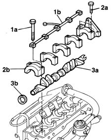
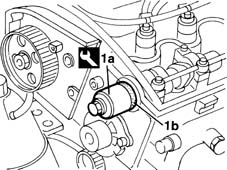

1036B10 overhead camshaft - r r on vehicle
- Path
- Procedures > 10 ENGINE UNIT > 1036 TIMING SYSTEM > 1036B overhead camshaft > 1036B10 overhead camshaft - r r on vehicle
- Kind
- repair procedure (removal / refitting; the operation number is the code)
- Applies to
- engines: 1.9 JTD 8V; all production periods
- Interactive page
- https://sloeber94.github.io/elrnDB-fMltpl/en/#/2891372
Applies to: engines: 1.9 JTD 8V; all production periods
 Removing
Removing
 Refitting
Refitting4450B10 Front WHEEL (one) - R.R.
7055B42 Additional FRONT WHEEL ARCH (one), left or right - R.R.
1092G10 single engine belt r r
1092A12 crankshaft pulley - r+r for versions with air conditioner
1032D12 timing system protective cover(s) - r + r
1016A10 sound-proofing cover - r + r
1008C10 power unit upper reaction link r r
1008C14 engine link bracket - r r
1032B40 toothed-driven pulley (one) - r + r with timing belt removed
1016A20 single cam cover - r + r and replace gasket
1. Unscrew retaining bolt (1a) and remove camshaft journal lubrication pipe (1b).
2. Undo bolts (2a) and remove camshaft caps (2b).
3. Remove camshaft (3a) with oil seal (3b).

Applies to: engines: 1.9 JTD 8V; all production periods
Refitting
RemovingFit the camshaft to the cylinder head.
Tighten the cap retaining bolts.
Fit the lubrication pipe and secure by tightening the retaining bolts.
Tighten the cap bolts to torque.
 | Fastening | Component | Ø | Value (daNm) |
|---|---|---|---|---|
- | Bolt | CAMSHAFT CAPS | M6 | 1 |
| Fastening | Component | Ø | Value (daNm) |
|---|---|---|---|---|
- | Bolt | CAMSHAFT CAPS | M7 | 1.5 |
1. Use tool (1a) to fit new oil seal (1b) to the camshaft.
 | Name | Country |
|---|---|---|
1a | Fitting tool | 1.860.824.000 |

Applies to: engines: 1.9 JTD 8V; all production periods
1016A20 single cam cover - r + r and replace gasket
1032B40 toothed-driven pulley (one) - r + r with timing belt removed
1008C14 engine link bracket - r r
1008C10 power unit upper reaction link r r
1016A10 sound-proofing cover - r + r
1032D12 timing system protective cover(s) - r + r
1092A12 crankshaft pulley - r+r for versions with air conditioner
1092G10 single engine belt r r
7055B42 Additional FRONT WHEEL ARCH (one), left or right - R.R.
Topics linked from this page (12)
- 1008C10 power unit upper reaction link r r
- 1008C14 engine link bracket - r r
- 1016A10 sound-proofing cover - r + r
- 1016A20 single cam cover - r + r and replace gasket
- 1032B14 toothed timing belt - r + r for timing adjustment or replacement versions with air conditioner
- 1032B40 toothed-driven pulley (one) - r + r with timing belt removed
- 1032D12 timing system protective cover(s) - r + r
- 1092A12 crankshaft pulley - r+r for versions with air conditioner
- 1092G10 single engine belt r r
- 3330D30 vacuum pump - r+r
- 4450B10 Front WHEEL (one) - R.R.
- 7055B42 Additional FRONT WHEEL ARCH (one), left or right - R.R.